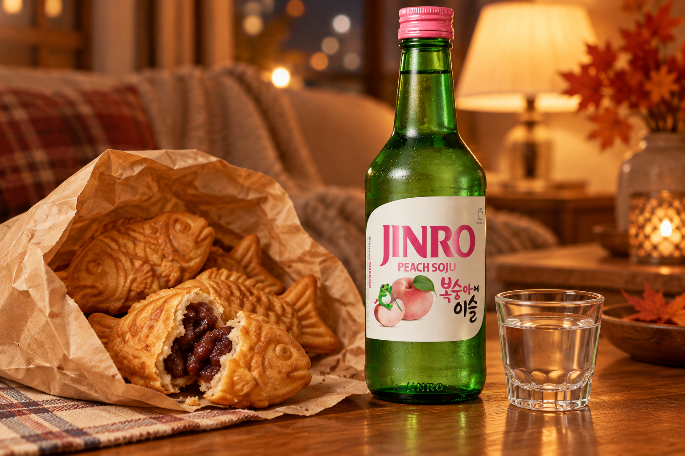
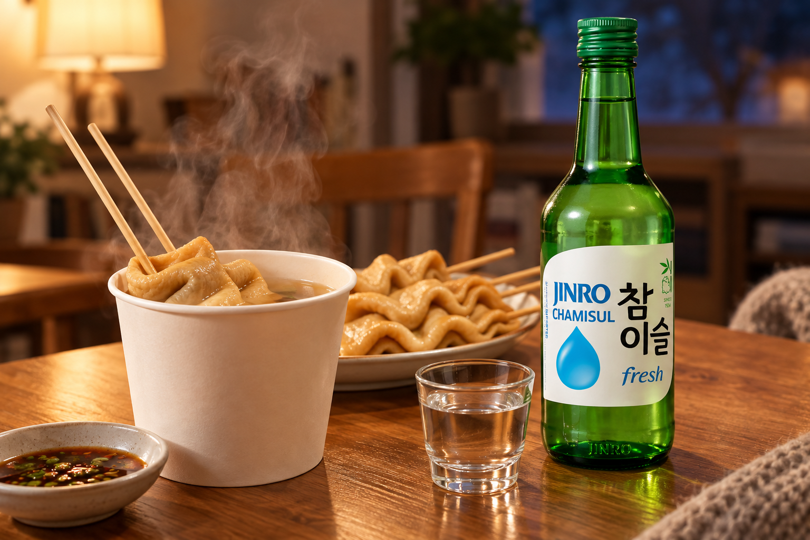
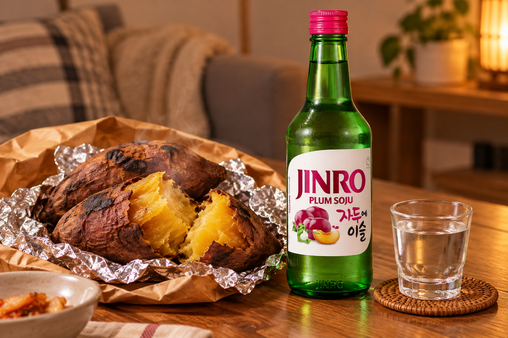
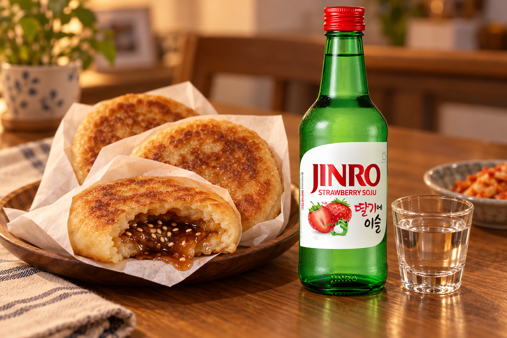
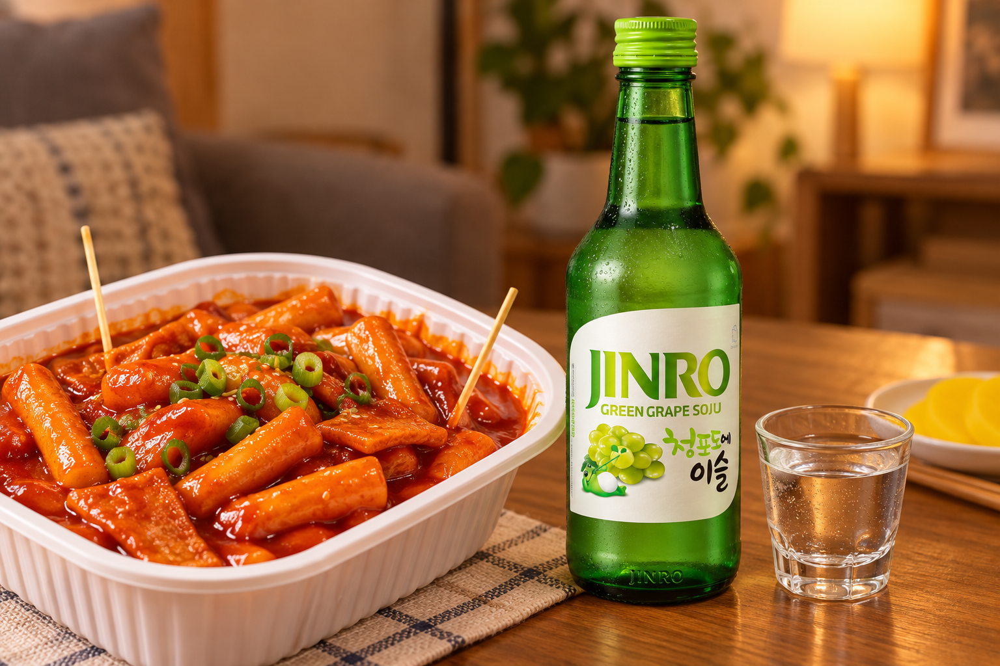

When Seoul Gets Cold: 5 Cold-Weather Street Foods Koreans Crave
From bungeoppang hunting to roasted sweet potatoes, here are five street snacks that show up when Seoul turns chilly, plus a JINRO to pour with each.
In Seoul, the first truly cold week of the year starts a kind of treasure hunt. The target: a small street cart selling warm, fish-shaped pastries.
Koreans even have a word for living close to one. Bungsegwon is a play on yeoksegwon, the term for a home near a subway station, and it means your neighborhood has a bungeoppang stall within easy reach.
Here is how the hunt works, along with five cold-weather snacks worth tracking down and a JINRO pairing for each when you bring them home.

How the Bungeoppang Hunt Works
Bungeoppang carts tend to pop up when the weather turns cold, and they can be surprisingly hard to find. That is why people share locations with each other.
On Karrot, a popular Korean neighborhood app, users add stalls to a crowdsourced bungeoppang map each winter, often with quick reviews and photos. If you visit Seoul in the colder months, it is worth a look. Bring some cash, too, since many small stalls prefer it.

5 Street Snacks and the JINRO to Pair with Them
Most of these snacks are made to go. Grab a bag on your way home, set everything out on the table and pour a chilled JINRO alongside.
1. Bungeoppang × JINRO Peach
This fish-shaped pastry is crisp on the outside and filled with sweet red bean paste. Custard is the other classic filling, and some stalls now offer options like cheese or pizza.
Fans even debate which classic filling is better. Whichever side you are on, try it with JINRO Peach. Its peach flavor goes well with the sweetness of red bean.

2. Eomuk × JINRO Chamisul Fresh
Fish cake skewers simmered in a light broth are a cold-weather street-food staple. At many stalls, you can pour yourself a cup of the warm broth, too.
The broth is savory and mild, so pair it with JINRO Chamisul Fresh for a clean finish.

3. Goguma × JINRO Plum
Roasted sweet potatoes, often sold from drum-shaped roasters on the street, are one of the simplest winter snacks. The skin chars a little, while the inside turns soft and sweet.
JINRO Plum adds a tangy note that balances the deep sweetness of the sweet potato.

4. Hotteok × JINRO Strawberry
Hotteok is a pan-fried pancake filled with brown sugar, cinnamon and often chopped nuts or seeds. The filling melts into a hot syrup, so take your first bite carefully.
The bright fruit flavor of JINRO Strawberry gives a fresh contrast to the rich cinnamon syrup.

5. Tteokbokki × JINRO Green Grape
Chewy rice cakes in a sweet and spicy gochujang sauce are a favorite in any season, but a hot container of tteokbokki hits differently on a cold night.
JINRO Green Grape brings a refreshing fruit note to balance the spicy-sweet sauce.

Start Your Own Snack Hunt
You do not have to be in Seoul to try this. Many Korean markets and snack shops abroad sell hotteok, tteokbokki or fish-shaped pastries, especially once the weather cools down.
Pick up one or two, choose a JINRO to match and turn a cold evening at home into a Seoul-style snack night.
For more JINRO pairings and Korean food stories, visit JINRO Global’s official Instagram, Facebook, and YouTube.
This article is intended for readers of legal drinking age. Please enjoy JINRO responsibly and in moderation, and never drink and drive.